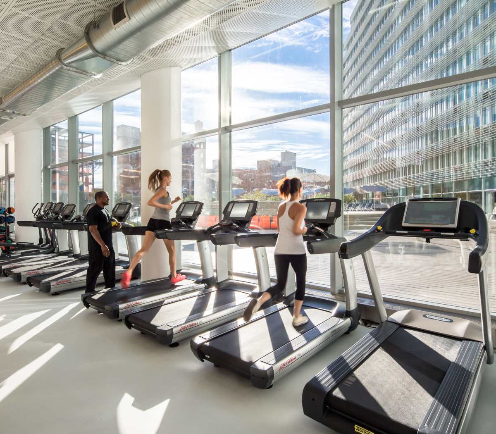

- Cardiovascular Equipment:
Treadmills, Elliptical trainers,
Stationary bikes (recumbent and upright)
Rowing machines
Stair climbers or step machines
- Strength Training Equipment:
Free weights (dumbbells, barbells), Weight machines (chest press, leg press, lat pulldown, etc.)
Cable machines, Smith machines Power, racks Kettlebells
- Functional Fitness Equipment:
Medicine balls, Resistance bands, Bosu balls, Stability balls,TRX suspension trainers,Battle ropes
- Flexibility and Mobility Equipment:
Foam rollers, Yoga mats, Stretching benches, Massage sticks
- Boxing and Martial Arts Equipment:
Punching bags, Speed bags, Boxing gloves, Jump ropes
- CrossFit Equipment:
Plyo boxes, Wall balls, Olympic weightlifting bars and plates, Concept2 rowers
- Cardio Entertainment:
Entertainment systems integrated with cardio machines (TV screens, internet connectivity, etc.)
- Fitness Accessories:
Heart rate monitors; Fitness trackers, Water bottles,Towels
- Gym Flooring:
Rubber flooring, Interlocking foam mats, Turf for sled pushes and pulls
- Recovery and Wellness Equipment:
Saunas, Hydrotherapy equipment (hot tubs, cold plunge pools),Massage chairs or tables
- Group Exercise Equipment:
Group exercise mats, Step platforms, Resistance tubes
- Technology Integration:
Virtual reality fitness equipment, Smart gym equipment with fitness tracking capabilities,
Remember that the specific equipment in a gym can vary based on the gym's size, budget,
and target audience. Additionally, trends in fitness equipment may change over time as
new technologies and training methods emerge. Before selecting equipment for a gym, it's
essential to understand the needs and preferences of the gym-goers it aims to serve.
|

|